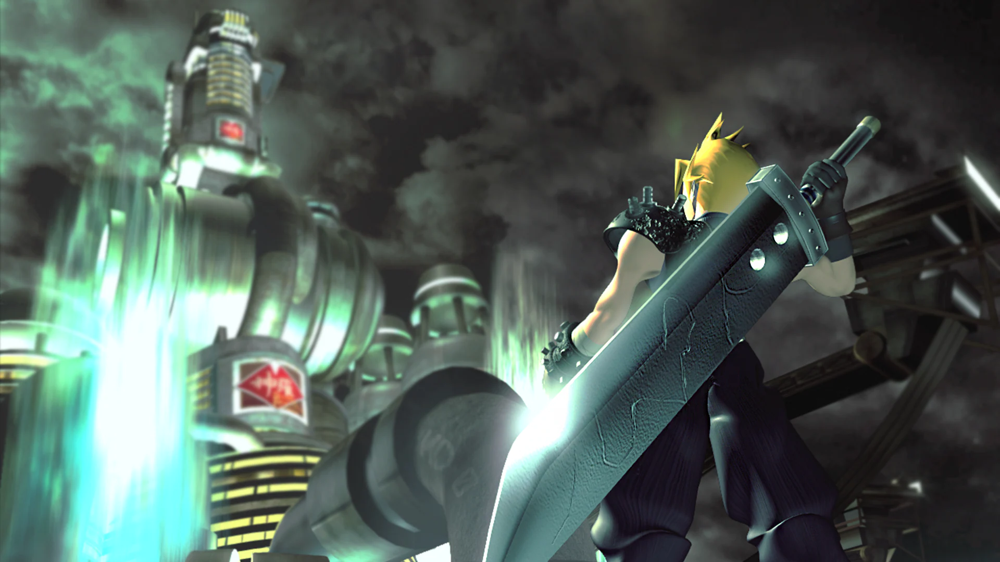

Álbuns
Meus álbuns favoritos são "A Night at the Opera" do Queen e "Tudo Foi Feito Pelo Sol" do Os Mutantes.

"A Night at the Opera", lançado pelo Queen em 1975, é um álbum que marcou um ponto de virada na música rock, representando uma fusão sem precedentes de estilos e técnicas. O álbum foi lançado em um momento em que o rock estava se diversificando e experimentando novas formas. O início dos anos 70 foi uma era de grande criatividade e inovação no rock, com o surgimento de subgêneros como o rock progressivo e o glam rock. Bandas como Genesis e David Bowie estavam empurrando os limites do gênero, e o Queen aproveitou essa atmosfera para criar algo verdadeiramente original.Produzido por Roy Thomas Baker e pelo próprio Queen, o álbum aproveitou as técnicas de estúdio de ponta da época. A utilização extensiva de overdubs e efeitos especiais, como a sobreposição de múltiplas camadas vocais em "Bohemian Rhapsody", foi revolucionária. A produção foi um reflexo da tendência crescente de orquestração e teatralidade no rock progressivo, uma característica que se tornou popular na época, impulsionada por bandas como Yes e Emerson, Lake & Palmer. O álbum não só estabeleceu novos padrões de produção, mas também ajudou a definir o som grandioso do rock operático, misturando elementos clássicos com a energia do rock.
"Tudo Foi Feito Pelo Sol", lançado em 1974, é um marco da Tropicália, um movimento cultural brasileiro que emergiu no final dos anos 60 e início dos 70. Este movimento foi caracterizado por sua mistura de influências culturais e musicais, refletindo uma rica tapeçaria de tradições brasileiras e influências internacionais. Durante esse período, o Brasil estava passando por uma ditadura militar, e a Tropicália surgiu como uma forma de resistência cultural, utilizando a música e as artes para criticar e satirizar a política e a sociedade. O álbum dos Mutantes, produzido por André Masseno, exemplifica a experimentação sonora típica da Tropicália. Os Mutantes foram pioneiros na incorporação de elementos do rock psicodélico e experimental em sua música, combinando-os com ritmos e sonoridades brasileiras tradicionais. A produção inovadora do álbum utilizou efeitos de estúdio e técnicas não convencionais, como a manipulação de fita e a experimentação com timbres e texturas, para criar um som eclético e avant-garde. Em um momento em que o Brasil estava se adaptando às novas influências internacionais, o álbum capturou a essência do movimento Tropicália, misturando sátira, crítica social e uma abordagem musical ousada que continua a influenciar a música brasileira até hoje.
Queen

Queen é uma banda de rock britânica que se formou em Londres em 1970. Sua formação clássica era Freddie Mercury (vocais principais e piano), Brian May (guitarra principal e vocais), Roger Taylor (bateria e vocais) e John Deacon (baixo). Seus primeiros trabalhos foram influenciados pelo rock progressivo, hard rock e heavy metal, mas a banda gradualmente se aventurou em músicas mais convencionais e voltadas para o rádio, incorporando estilos adicionais, como rock de arena e pop rock, em sua música. Antes de formar o Queen, May e Taylor tocaram juntos na banda Smile. Mercury, então conhecido pelo nome de nascimento Farrokh Bulsara, era fã do Smile e os incentivou a experimentar técnicas de palco e gravação mais elaboradas. Mercury se juntou em 1970, sugeriu o nome “Queen” e adotou seu nome de palco familiar. Deacon foi recrutado antes de a banda gravar seu álbum de estreia homônimo em 1973. O Queen entrou nas paradas do Reino Unido com seu segundo álbum, Queen II, em 1974, mas foi o lançamento de Sheer Heart Attack ainda naquele ano e A Night at the Opera em 1975 que lhes trouxe sucesso internacional. Este último incluiu “Bohemian Rhapsody”, que permaneceu em primeiro lugar no Reino Unido por nove semanas e também ajudou a popularizar o videoclipe. O álbum de 1977 da banda, News of the World, continha “We Will Rock You” e “We Are the Champions”, que se tornaram hinos em eventos esportivos. No início dos anos 1980, o Queen era uma das maiores bandas de rock de estádio do mundo. “Another One Bites the Dust” (1980) tornou-se seu single mais vendido, enquanto seu álbum de compilação Greatest Hits de 1981 é o álbum mais vendido no Reino Unido e está certificado oito vezes platina nos EUA. Sua performance no concerto Live Aid de 1985 foi classificada entre as maiores da história do rock por várias publicações musicais. O último show com sua formação clássica—o último show ao vivo de Mercury—aconteceu em Knebworth, Inglaterra, em agosto de 1986. Em 1991, Mercury morreu de broncopneumonia, uma complicação da AIDS, e Deacon se aposentou em 1997. May e Taylor têm se apresentado sob o nome do Queen com Paul Rodgers e Adam Lambert como vocalistas em turnês desde então. Estimativas de suas vendas de discos variam de 170 milhões a 300 milhões de registros, tornando-os um dos artistas musicais mais vendidos do mundo. O Queen recebeu o prêmio de Contribuição Notável à Música Britânica da British Phonographic Industry em 1990. Foram induzidos ao Rock and Roll Hall of Fame em 2001. Cada membro do Queen compôs vários singles de sucesso, e todos os quatro membros da banda foram induzidos ao Songwriters Hall of Fame em 2003. Em 2005, a banda recebeu o Ivor Novello Award por Coleção de Canções Notáveis da British Academy of Songwriters, Composers, and Authors, e em 2018 receberam o Grammy Lifetime Achievement Award.
Em 31 de outubro de 1975, a banda de rock britânica Queen lançou o single "Bohemian Rhapsody". A canção foi escrita por Freddie Mercury para o álbum "A Night at the Opera" de 1975. Foi produzido por Roy Thomas Baker. A gravação começou em 24 de agosto de 1975, os membros da banda May, Mercury e Taylor cantavam seus vocais continuamente por aproximadamente dez horas por dia. A música inteira levou três semanas para ser gravada e, em algumas seções, apresentava 180 overdubs separados. A música pode ser dividida em seis seções: introdução, balada, solo de guitarra, ópera, hard rock e final. As mudanças repentinas de estilo eram naquele momento incomuns.
A Night at the Opera 1975
"A Night at the Opera" é um álbum da banda britânica Queen , lançado em 1975, e é amplamente aclamado por sua inovação musical e diversidade de estilos. Dividido entre os lados A e B, o álbum contém 6 músicas no lado A e 5 no lado B. A produção do álbum foi um esforço monumental, refletindo a ambição da banda em criar algo verdadeiramente grandioso e inovador. O trabalho envolveu o uso de técnicas de gravação avançadas e uma mistura eclética de gêneros, estabelecendo um novo padrão para a produção de álbuns no rock.Os destaques do álbum começam com a faixa de abertura, "Death on Two Legs", que exibe o poderoso vocal da banda e os impressionantes riffs de guitarra, preparando o ouvinte para o que está por vir. "'39" é uma canção que combina suavemente rock e folk. A música narra a história de astronautas que viajam pelo espaço e retornam para encontrar um mundo transformado pela passagem do tempo, explorando temas de separação e mudança com uma melodia envolvente. "Sweet Lady" é uma faixa de hard rock que se destaca por seu ritmo energético e riffs intensos, trazendo uma vibração vibrante e poderosa. Em contraste, "Seaside Rendezvous" mistura rock com elementos de música de salão e vaudeville. O estilo alegre e retrô da música remete aos anos 1920 e 1930, com uma produção que imita o som de uma orquestra de jazz antiga. Eu definiria "Seaside Rendezvous" como uma música que representa a felicidade e simplicidade daqueles anos, com uma produção que evoca o charme de uma orquestra de jazz antiga.
No lado B, a grandiosíssima "The Prophet's Song" é minha faixa favoritas do álbum. Com uma duração de 8 minutos e 21 segundos, é uma faixa de rock progressivo que se destaca pela repetição vocal e harmonia impressionantes. A música é estruturada em vários movimentos, começando com uma introdução atmosférica e misteriosa que prende o ouvinte, evoluindo para uma poderosa narrativa musical marcada por uma mistura de rock, ópera e elementos sinfônicos. A letra, inspirada por um pesadelo apocalíptico de Freddie Mercury, narra uma profecia de destruição e renovação, abordando temas de desastre iminente e esperança de um novo começo. A letra é rica em imagens evocativas e simbolismo, refletindo uma visão grandiosa e épica. Um dos momentos mais impressionantes é a seção a cappella no meio da faixa, onde a banda utiliza técnicas de overdubbing para criar um coro vocal sobreposto semelhante a um canto gregoriano. "Love of My Life" é uma canção romântica e sentimental, caracterizada por sua melodia lenta e suave, com belos sons de piano que realçam sua natureza emocional e delicada. "Bohemian Rhapsody" é uma obra-prima do Queen, famosa por sua estrutura não convencional que mistura ópera e hard rock em uma narrativa épica e enigmática. A canção começa com uma introdução a cappella melancólica, transita para uma seção operística com harmonias complexas e elementos teatrais, passa por uma explosiva seção de rock pesado com solos de guitarra marcantes e conclui com um retorno à calma da introdução. A produção inovadora envolveu mais de 180 sobreposições de vocais e extensa manipulação de técnicas de gravação, com o processo se estendendo por cerca de três semanas. A ideia original de Mercury era criar uma peça musical sem refrão ou estrutura convencional, refletindo temas de arrependimento e busca por redenção.
A última faixa do álbum, "God Save the Queen", apresenta sons de guitarra distorcida e bateria, encerrando o álbum com um impacto poderoso e enérgico. O sucesso de "A Night at the Opera" consolidou a reputação da banda como pioneira e estabeleceu um novo padrão para a produção de álbuns no rock. Influenciando gerações futuras, o álbum demonstra a capacidade do Queen de fundir rock com elementos teatrais e operáticos, solidificando sua posição como uma das bandas mais inovadoras e influentes da história do rock.
Os Mutantes
Os Mutantes, uma banda vocal e instrumental formada em 1966 em São Paulo, foi inicialmente composta por Arnaldo Baptista (piano, contrabaixo e composição), Sérgio Dias (guitarra, violão e composição) e Rita Lee (flauta, harpa e composição). O grupo começou com o nome de Wooden Faces, depois passou a se chamar Six Sided Rockers, com seis integrantes. Eles se apresentaram em programas de televisão como Astros do Disco e Jovem Guarda, ambos na TV Record de São Paulo. Após a saída de três membros, o grupo mudou o nome para O Conjunto e gravou um compacto pela Continental com a música "O Suicida" (de sua autoria). Mudando novamente o nome para Os Mutantes, estrearam no programa O Pequeno Mundo de Ronnie Von, na TV Record, em 1966. Ainda naquele ano, fizeram coro na gravação de "Bom-dia" (Gilberto Gil) por Nana Caymmi. Depois dessa experiência, foram convidados para acompanhar Gilberto Gil na música "Domingo no Parque" no III FMPB da TV Record, em 1967. Nesse mesmo ano, lançaram pela Polydor o primeiro disco como Os Mutantes, um compacto com "O Relógio" (de sua autoria).
Em 1968, junto com Gilberto Gil, Caetano Veloso, Gal Costa, Tom Zé e Nara Leão, gravaram o LP Tropicália ou Panis et Circensis, pela Philips, e lançaram seu primeiro LP solo Mutantes, com faixas como "O Relógio," "Batmacumba" (Gilberto Gil e Caetano Veloso) e "Trem Fantasma" (com Caetano Veloso). No mesmo ano, acompanharam Caetano Veloso na música "É Proibido Proibir" na eliminatória paulista do III FIC da TV Globo, e na fase final do festival, defenderam a música "Caminhante Noturno," de autoria dos três, que obteve o sétimo lugar. Também participaram do IV FMPB, em 1968, com as músicas "Dom Quixote" (de sua autoria) e "2001" (Rita Lee e Tom Zé).Em 1969, realizaram um show na boate Sucata, no Rio de Janeiro, junto com o grupo baiano, e lançaram o segundo LP, Mutantes, com faixas como "Dom Quixote," "Caminhante Noturno" e "Algo Mais". Nesse ano, foram à Europa e se apresentaram no MIDEM, em Cannes, França, e em Lisboa, Portugal. De volta ao Brasil, fizeram o show O Planeta dos Mutantes no Teatro Casa Grande, no Rio de Janeiro, e voltaram à França para um espetáculo no Olympia, em Paris. A formação da banda aumentou com a entrada do baterista Dinho e do baixista Liminha.
Em 1970, participaram do V FIC com a música "Ando Meio Desligado" (Arnaldo e Sérgio) e lançaram o LP A Divina Comédia com faixas como "Ando Meio Desligado" e "Desculpe, Baby" (Arnaldo e Rita Lee). Em 1971, lançaram pela Polydor o LP Jardim Elétrico com faixas como "Technicolor" e "Its Very Nice Pra Chuchu" (todas de sua autoria). Em 1972, após apresentar "Mande Um Abraço Pra Velha" (de sua autoria) e lançar o LP No País dos Bauretz, o grupo se desfez com a saída de Rita Lee, que passou a seguir carreira solo. Em 1973, o grupo reapareceu com Sérgio Dias (guitarra), Liminha (baixo), Dinho (bateria) e Manito (teclados). Arnaldo lançou em 1974, pela Philips, um LP solo intitulado Loki, com faixas como "Será Que Eu Vou Virar Bolor?" e "Cê Tá Pensando Que Eu Sou Loki?" (ambas de sua autoria). Com a saída de Manito e Dinho do grupo em 1974, entraram Túlio Mourão (teclados) e Rui Motta (baixo). Em 1975, Liminha foi substituído por Antônio Pedro Medeiros, e com essa formação, lançaram os LPs Tudo Foi Feito Pelo Sol (1975) e Mutantes ao Vivo (1977), além de um compacto, Cavaleiros Negros (1976), todos pela Som Livre.Em 1982, Arnaldo Baptista lançou seu segundo disco solo, Singin' Alone, pela gravadora independente Baratos Afins. Pianista exímio, de formação erudita, Arnaldo é considerado o elo entre o pop tropicalista dos anos 1960 e 1970 e o rock brasileiro renascido a partir da década de 1980. Por volta de 1988, o grupo norte-americano Toter Totz gravou um LP independente que incluiu vários samplers dos Mutantes e uma regravação de "Batmacumba". Em sua fase progressiva, sem Rita Lee, Os Mutantes gravaram em 1973 o LP A e o Z, lançado somente em 1992. Em 1996, foi lançado o disco-tributo Triângulo Sem Bermudas pela gravadora Natasha, com vários artistas, incluindo Kid Abelha, Pato Fu, Lulu Santos, Arnaldo Antunes e Planet Hemp, interpretando clássicos do grupo.
Os Mutantes, uma das bandas mais influentes e inovadoras do cenário musical brasileiro, surgiram em São Paulo no final dos anos 1960, no coração do movimento tropicalista. Inicialmente formada por Rita Lee, Arnaldo Baptista e Sérgio Dias, a banda se destacou por sua ousadia em misturar rock psicodélico, música popular brasileira e elementos de vanguarda. Eles desafiavam convenções e encantavam o público com uma sonoridade única, repleta de experimentações sonoras e irreverência, capturando a essência de uma época de transformação cultural e política no Brasil.Tudo Foi Feito Pelo Sol 1974
Com o passar dos anos e algumas mudanças em sua formação, Os Mutantes lançaram o álbum Tudo Foi Feito Pelo Sol em 1974, marcando uma nova fase em sua trajetória. Este álbum, o primeiro sem Rita Lee, mostrou um direcionamento mais voltado ao rock progressivo. A liderança musical de Sérgio Dias, junto com os novos integrantes Túlio Mourão, Antônio Pedro e Rui Motta, trouxe uma sonoridade complexa, rica em elementos instrumentais, com longas passagens e variações harmônicas que revelam a maturidade artística da banda. O disco apresenta uma temática filosófica e espiritual, com letras que exploram a natureza, o cosmos e a transcendência, sugerindo um olhar mais profundo sobre a existência e a criação. Tudo Foi Feito Pelo Sol é amplamente elogiado por sua qualidade técnica e musical, e mesmo se afastando dos elementos iniciais do tropicalismo, consolidou Os Mutantes como um dos pilares do rock brasileiro, mantendo vivo o espírito de inovação e resistência artística que sempre marcou sua trajetória. Com produção assinada pela própria banda, Tudo Foi Feito Pelo Sol foi lançado em 1974 pela Som Livre e foi o último álbum dos Mutantes antes do revival da banda em 2006. Da formação inicial, restou apenas Sérgio Dias, que se juntou aos músicos Túlio Mourão (piano, órgão Hammond, sintetizador Minimoog e vocais), Antônio Pedro Medeiros (baixo e vocais) e Rui Motta (bateria, percussão e vocais) para formar a última versão dos Mutantes, aquela realmente progressiva que Sérgio e Arnaldo haviam pensado em adotar como identidade. Mesmo com as brigas entre os dois irmãos e a saída de Liminha e Dinho Leme, Sérgio Dias tentou manter a banda. O lado positivo de tudo ter terminado aqui é que, mesmo em uma fase, intenção e abordagem musical completamente diferentes, o disco Tudo Foi Feito Pelo Sol é excelente, carregando a lenda de ter sido gravado em um único take. Em 2006, a Som Livre relançou o disco, incluindo as três faixas (Cavaleiros Negros, Tudo Bem e Balada do Amigo) que formaram um EP da banda lançado em 1976. Particularmente, essa iniciativa quebrou a concepção original do álbum, que terminava de maneira bela, arrebatadora e cíclica, com a música-título.O álbum Tudo Foi Feito Pelo Sol, lançado em 1974, marcou uma fase distinta na carreira de Os Mutantes. Este álbum foi o primeiro da banda sem Rita Lee, que havia saído do grupo em 1972, deixando Sérgio Dias como a principal força criativa. Com a saída de Rita, a banda passou por uma transformação sonora, movendo-se em direção ao rock progressivo, um estilo que era cada vez mais popular tanto no Brasil quanto internacionalmente.
No Brasil, os anos 1970 foram um período de grande efervescência musical, mas também de repressão política sob a ditadura militar, que teve início em 1964. O movimento tropicalista, do qual Os Mutantes fizeram parte, havia desafiado as normas culturais na década anterior, misturando música tradicional brasileira com influências do rock, pop e psicodelia. No entanto, com o endurecimento do regime e a perseguição a artistas, muitos dos principais nomes do movimento tropicalista, como Caetano Veloso e Gilberto Gil, foram exilados ou censurados.Jogos
Final Fantasy VII
O meu jogo favorito é o Final Fantasy VII, eu tenho uma paixão enorme por ele,passei por vários momentos bem únicos,como descobrir depois de um bom tempo jogando o cd 3,que vinha com um item no inventário em que você salva no local em que está o personagem,quando eu morria eu voltava no inicio e tinha que rejogar e enfrentar os inimigos. Final Fantasy VII é um jogo RPG, lançado para o PlayStation em 1997. O jogo é ambientado em um mundo de ficção científica e fantasia e segue a história de Cloud, um mercenário que se vê envolvido em uma luta épica contra a corporação Shinra e uma ameaça ainda maior para o planeta. O jogo começa com Cloud Strife, um ex-membro da unidade de elite SOLDIER, trabalhando como mercenário para o grupo eco-terrorista Avalanche. Este grupo está tentando combater a Shinra Electric Power Company, que está extraindo a energia vital do planeta, conhecida como "Mako", e prejudicando o meio ambiente. Durante uma dessas missões, Cloud se junta à Avalanche e descobre uma conspiração ainda mais complexa envolvendo um certo personagem. Os personagens principais da trama de final fantasy VII são Tifa, Cloud, Barret, Aerith, Sephiroth. Final Fantasy VII foi lançado em três CDs. Cada CD contém uma parte da história, e a divisão entre eles é feita para acomodar a grande quantidade de dados, como gráficos e vídeos, que o jogo possui.
O primeiro CD de "Final Fantasy VII" serve como a introdução ao universo do jogo, centrando-se na cidade de Midgar e no grupo ecoterrorista Avalanche. O jogador é apresentado a Cloud Strife, um ex-soldado da Shinra que se une à luta contra a corporação que drena a energia vital do planeta, conhecida como Mako. A narrativa avança com missões para sabotar a Shinra, revelando os personagens principais como Tifa Lockhart e Barret Wallace, e detalha o impacto devastador da Shinra na vida dos cidadãos. O CD culmina em eventos dramáticos, incluindo a destruição de um dos setores de Midgar e o primeiro vislumbre do antagonista principal, Sephiroth, estabelecendo as bases para o conflito central do jogo. No segundo CD, a história se expande além de Midgar, levando o grupo para explorar o vasto mundo de Gaia. A equipe visita várias localidades, incluindo a cidade natal de Cloud, Nibelheim, e outras regiões significativas como Cosmo Canyon e o deserto de Corel. Durante essa jornada, são revelados mais detalhes sobre Sephiroth e sua conexão com a Shinra, bem como a verdadeira identidade de Cloud. O CD também apresenta novos desafios e personagens aliados, como Cid Highwind e Yuffie Kisaragi, enquanto o grupo enfrenta conflitos internos e externos. A captura e resgate de Aerith Gainsborough adicionam uma camada emocional significativa à trama, preparando o palco para o clímax da história. O terceiro CD é o clímax da história, onde a narrativa atinge seu ponto culminante. A equipe enfrenta os desafios finais enquanto tenta impedir Sephiroth de executar seu plano devastador de invocar o meteorito "Meteor" para destruir o planeta. A batalha final contra Sephiroth, incluindo sua forma final, Safer Sephiroth, é intensa e emocionalmente carregada. Após vencer Sephiroth e superar os últimos obstáculos, o grupo vê a resolução de suas jornadas pessoais e a conclusão da luta pela sobrevivência do planeta. O final do jogo oferece uma visão do futuro dos personagens e um fechamento satisfatório para a épica aventura, amarrando todas as pontas soltas da história.
Filmes

Fallen Angels

O meu filme favorito é Fallen Angels, uma obra intrigante e visualmente distinta dirigida por Wong Kar-wai e lançada em 1995. Este filme de Hong Kong é conhecido por seu estilo visual e temático único, que o diferencia de outros filmes da época. Fallen Angels entrelaça duas histórias principais: uma segue um assassino profissional e seu parceiro que deseja se afastar da vida criminosa, enquanto a outra acompanha uma jovem envolvida com um gangster. O enredo é notável por sua complexidade e pelo modo como explora temas como solidão, desilusão e o impacto do ambiente urbano na vida dos personagens. Com uma narrativa não linear e uma estética marcante, o filme prende a atenção do início ao fim, oferecendo uma experiência cinematográfica memorável e profunda.
Animes